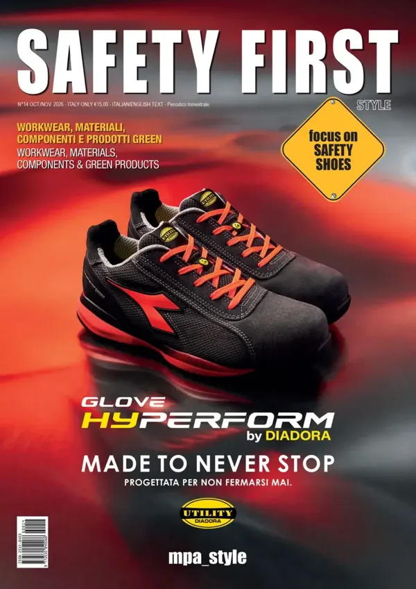

Tannery
Il futuro della conceria: digitalizzazione, sostenibilità e open innovation
Digitalizzazione, sostenibilità e open innovation: le sfide che attendono l'industria conciaria.
Tannery
Digitalizzazione, sostenibilità e open innovation: le sfide che attendono l'industria conciaria.
Shoes & Bags
ABC Fashion Event 2026: a Fermo il distretto calzaturiero fa il pieno di espositoriTannery
SSIP entra in Cotance come supporting member: un nuovo passo verso l’EuropaShoes & Bags
Futurmoda ottobre 2026: la filiera della calzatura tra Circolarità Avanzata, Intelligenza Artificiale e Nuovi Linguaggi MatericiSafety First
Safety First Ottobre/Novembre 2026: il nuovo numero è online in versione sfogliabileTannery
L'opera di Andrea Bianconi torna a Zermeghedo, nella sede di GSC Group.
Shoes & Bags
La fiera vietnamita si presenta come piattaforma dell'area ASEAN per il sourcing di calzature e pelletteria.
Outerwear
I giubbotti in pelle Daytona 73.
Safety First
Il salone dell'emergenza di Montichiari chiude con più professionisti in visita e dà appuntamento al 2027.
Tannery
Il museo della filiera della pelle porta al Senato il suo progetto per avvicinare i giovani alle materie STEAM.
Safety First
La tecnologia HYPERFORM passa dalle scarpe sportive alle calzature da lavoro Diadora Utility.

Pagine sulle riviste, articoli, banner sul sito, newsletter e presenza in fiera.
Numeri segnaposto, in attesa dei dati reali.
Richiedi il media kit